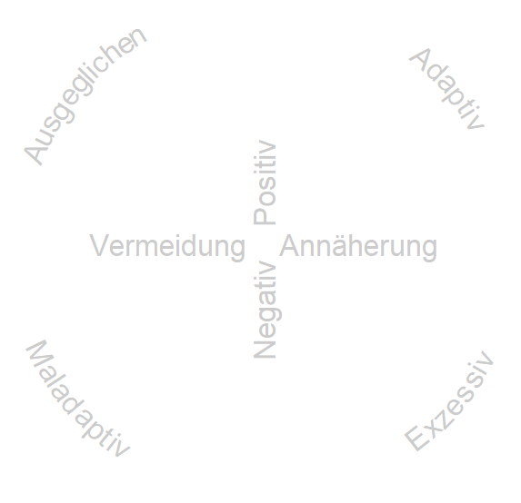
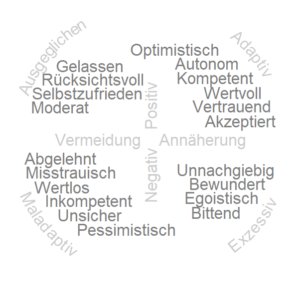

Glaubenssätze sind sogenannte mentale Repräsentationen, die widerspiegeln, was Menschen über sich und andere denken. Vielfach entstehen sie aus Erfahrungen, die Menschen im Bestreben gemacht haben, persönliche wichtige Ziele zu erreichen und Bedürfnisse zu befriedigen. Einmal gebildet, bleiben sie über lange Zeit stabil und können fortan Wahrnehmung, Zielsetzung und Verhalten beeinflussen.
Strukturmodelle beschreiben, welche Art von Glaubenssätzen es gibt. Dem Cor-Bel-Test liegt das gleichnamige Modell zugrunde, das auf einer mehrjährigen Forschungsarbeit von Prof. Dr. Patrick Mussel von der Psychologischen Hochschule Berlin basiert. Die Ergebnisse wurden in der renommierten Zeitschrift Journal of Personality and Social Psychology veröffentlicht. Ausgangspunkt der Forschungsarbeit war die Frage, welche selbstbezogenen Glaubenssätze es gibt, wie diese in einem Modell beschrieben werden können, und wie sie messbar gemacht werden können. Die Forschungsarbeit basiert auf drei aufeinander aufbauenden Studien:
Nach dem Cor-Bel-Modell lassen sich Glaubenssätze anhand eines hierarchischen Modells beschreiben. Auf der obersten Ebene können Glaubenssätze nach ihrer Valenz in positiv versus negativ unterschieden werden. In der Abbildung finden sich positive Glaubenssätze in der oberen Hälfte, negative in der unteren. Die zweite Unterscheidung betrifft die Richtung, wobei unterschieden wird, ob Glaubenssätze Annäherung oder Rückzug widerspiegeln. Diese Unterscheidung findet sich auf der horizontalen Achse, mit Annäherung auf der rechten und Rückzug auf der linken Seite. Aus der Kombination dieser beiden Achsen ergeben sich vier Quadranten.

Der obere rechte Quadrant beschreibt adaptive Glaubenssätze, die für eine wirkungsvolle Auseinandersetzung mit Herausforderungen steht (z.B. kompetent). Auf der gegenüberliegenden Seite liegen inhaltlich entgegengesetzte und somit maladaptive Glaubenssätze (z.B. unsicher). Im unteren rechten Quadranten finden sich exzessive Glaubenssätze, die extreme oder überzogene Formen ansonsten adaptiver Glaubenssätze darstellen. Das Gegenteil dessen, sogenannte ausgeglichenen Glaubenssätze, finden sich gegenüber im oberen linken Teil der Abbildung.
Auf tieferen Ebenen lassen sich Glaubenssätze weiter spezifizieren. Je tiefer die Ebene, desto mehr unterschiedliche Glaubenssätze werden unterschieden. Auf der untersten Ebene finden sich insgesamt 97 sogenannte Nuancen. Die Nuancen lassen sich zu 20 Facetten zusammenfassen, die innerhalb des Kreises genannt sind. Auch hier gilt: Gegenüberliegende Facetten erfassen Gegenteiliges (zum Beispiel optimistisch versus pessimistisch).

Das hierarchische Modell hat für die Anwendung den Vorteil, dass eine Betrachtung auf unterschiedlichen Ebenen möglich ist. Für eine eher globale Information sind die oberen Ebenen interessant. Für Feedback und Selbsterkenntnis eignen sich vor allem die 20 Facetten. Und für konkrete Ansatzpunkte für Interventionen und die Veränderung von Glaubenssätzen kann man punktuell auf die unterste Ebene der Nuancen zurückgreifen.